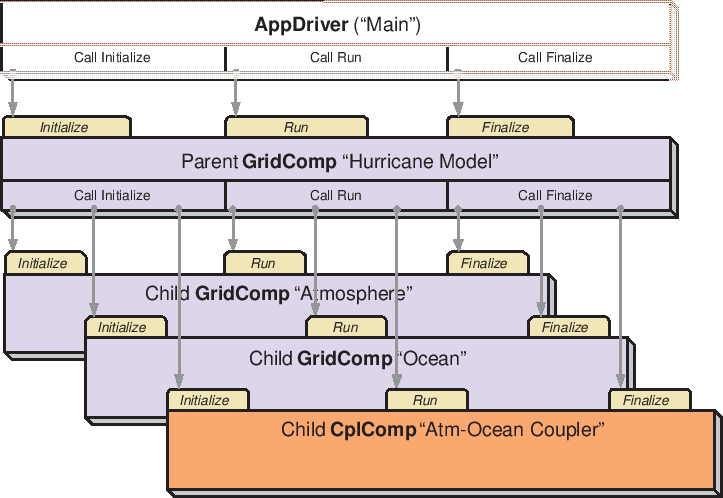
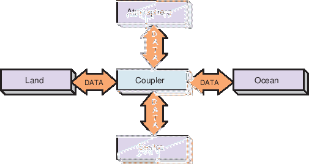
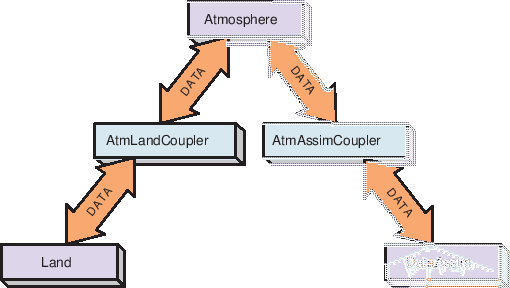
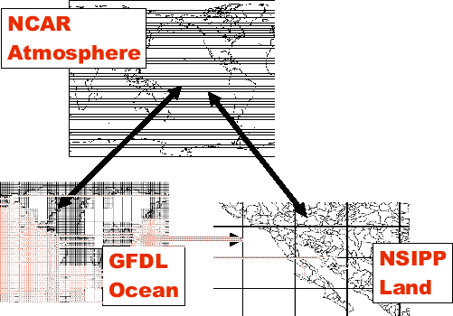

Subsections
12 Architectural Overview
The ESMF architecture is characterized by the layering strategy shown in
Figure 1. User code components that implement the
science portions of an application, for example a sea ice or land model,
are sandwiched between two layers. The upper layer is denoted the
superstructure layer and the lower layer the infrastructure layer.
The role of the superstructure layer is to provide a shell which encompasses
user code and provides a context for interconnecting input and output data
streams between components. The key elements of the superstructure are described
in Section 12.2. These elements include classes that wrap
user code, ensuring that all components present consistent interfaces. The
infrastructure layer provides a foundation that developers of science components
can use to speed construction and to ensure consistent, guaranteed behavior.
The elements of the infrastructure include constructs to support parallel
processing with data types tailored to Earth science applications, specialized
libraries to support consistent time and calendar management and performance,
error handling and scalable I/O tools. The infrastructure layer is described in
Section 12.3.
A hierarchical combination of superstructure, user code components, and
infrastructure are joined together to form an ESMF application.
The ESMF architecture and programming paradigm are based upon
five key concepts: modularity, flexibility, hierarchical
organization, communication within components, and a uniform
communication API.
The ESMF design is based upon modular Components. There
are two types of Components, one of which represents models
(Gridded Components) and one which represents couplers (Coupler Components).
Data are always passed between Components using a data structure
called a State, which can store Fields, FieldBundles of Fields,
Arrays, and other States. A Gridded Component stores no information about
the internals of the Gridded Components that it interacts with; this information
is passed in through the argument lists of the initialize, run,
and finalize methods. The information that is
passed in through the argument list can be a State from
another Gridded Component, or it can be a function pointer that performs
a computation or communication on a State. These function
pointers are called Transforms, and they are available as AttachableMethods
created by Coupler Components. They are called inside the
Gridded Component they are passed into. Although Transforms add
some complexity to the framework (and their use is not required), they are what
will enable ESMF to accommodate virtually any model of communication
between Components.
Modularity means that an ESMF component stores nothing about
the internals of other components. This allows components to be
used more easily in multiple contexts.
The ESMF does not dictate how models should be coupled; it
simply provides tools for creating couplers. For example,
both a hub-and-spokes type coupling strategy and
pairwise strategies are supported. The ESMF also allows model
communications to occur mid-timestep, if desired. Sequential,
concurrent, and mixed modes of execution are supported.
The ESMF does not impose restrictions on how data flows through
an application. This accommodates scientific innovation - if you
want your atmospheric model to communicate with your sea ice model
mid-timestep, ESMF will not stop you.
12.1.3 Hierarchical organization
ESMF allows applications to be composed hierarchically.
For example, physics and dynamics modules can be defined as
separate Gridded Components, coupled together with a Coupler Component, and all
of these nested within a single atmospheric Gridded Component.
The atmospheric Gridded Component can be run standalone, or can be included
in a larger climate or data assimilation application. See Figure
2 for an illustrative example.
The data structure that enables scalability in ESMF is the
derived type Gridded Component. Fortran alone does not allow you to create
generic components - you'd have to create derived types for
PhysComp, and DynComp, and PhysDynCouplerComp, and AtmComp. In
ESMF, these are always of type GridComp or CplComp, so they
can be called by the same drivers (whether that driver is a
standard ESMF driver or another model), and use the same methods
without having to overload them with many specific derived
types. It is the same idea when you want to support different
implementations of the same component, like multiple dynamics.
The ESMF defines a hierarchical, scalable architecture
that is natural for organizing very complex applications, and
for allowing exchangeable Components.
Figure 2:
A typical building block for an ESMF application consists
of a parent Gridded Component, two or more child Gridded Components, and
a Coupler Component. The parent Gridded Component is called by an
application driver. All ESMF Components have initialize, run, and
finalize methods. The diagram shows that when the application driver calls
initialize on a parent Gridded Component, the call cascades down to
all of its children, so that the result is that the entire “tree”
of Components is initialized. The run and finalize methods work the
same way. In this example a hurricane simulation is built
from ocean and atmosphere Gridded Components. The data exchange between
the ocean and atmosphere is handled by an ocean-atmosphere Coupler Component.
Since the whole hurricane simulation is a Gridded Component,
it could be easily be treated as a child and coupled to another
Gridded Component, rather than being driven directly by the application
driver. A similar diagram could be drawn for an atmospheric model containing
physics and dynamics components, as described in Section
12.1.3.
|
 |
Communication in ESMF always occurs within a Component. It
can occur internal to a Gridded Component, and have nothing to do
with interactions with other Components (setting aside
synchronization issues), or it can occur within a Coupler Component
or a transform generated by a Coupler Component. A result of the rule
that all communication happens within a Component is that
Coupler Components must always be defined on the union of all the
Components that they couple together. Models can choose to
use whatever mechanism they want for intra-model communications.
The point is that although the ESMF defines some simple rules
for communication, the communication mechanism that the
framework uses is not hardwired into its architecture -
the sends and receives or puts and gets are enclosed within
Gridded Components, Coupler Components and Transforms. The intent
is to accommodate multiple models of communication and technical
innovations.
ESMF has a single API for shared and distributed
memory that, unlike MPI, accounts for NUMA architectures and
does not treat all processes as being identical. It is possible for
users to set ESMF communications to a strictly message passing
mode and put in their own OpenMP commands.
The goal is to create a programming paradigm
that is performance sensitive to the architecture beneath it
without being discouragingly complicated.
12.2 Superstructure
The ESMF superstructure layer in a unifying context within which user
components are interconnected. Classes called Gridded Components,
Coupler Components, and States are used within the superstructure
to achieve this flexibility.
User code components under ESMF use special interface objects for Component to
Component data exchanges. These objects are of type import State and export
State. These special types support a variety of methods that allow user code
components to do things like fill an export State object with data to be shared
with other components or query an import State object to determine its contents.
In keeping with the overall requirements for high-performance it is permitted
for import State and export State contents to use references or pointers to
Component data, so that costly data copies of potentially large data structures
can be avoided where possible. The content of an import State and an export
State can be made self-describing.
The import State and export State abstractions are designed to be flexible
enough so that ESMF does not need to mandate a single format for fields. For
example, ESMF does not prescribe the units of quantities exported or imported.
However, ESMF does provide mechanisms to describe units, memory layout, and
grid coordinates. This allows the ESMF software to support a range of different
policies for physical fields. The interoperability experiments that we are using
to demonstrate ESMF make use of the emerging CF conventions [1] for
describing physical fields. This is a policy choice for that set of experiments.
The ESMF software itself can support arbitrary conventions for labeling and
characterizing the contents of States.
The Gridded Component class describes a user component that takes in one import State and produces one
export State. Examples of Gridded Components are major Earth system
model components such as land surface models, ocean models, atmospheric models and sea ice models. Components
used for linear algebra manipulations in a state estimation or data assimilation optimization procedure are also
created as Gridded Components. In general the fields within an import State and export State of a Gridded Component will
use the same discrete grid.
The other top-level Component class supported in the ESMF architecture is a
Coupler Component. This class is used for Components that take one or more
import States as input and map them through spatial and temporal interpolation
or extrapolation onto one or more output export States. In a Coupler Component
it is often the case that the export State(s) is on a different discrete grid
to that of the import State(s). For example, in a coupled ocean-atmosphere
simulation a Coupler Component might be used to map a set of sea-surface fields
in an ocean model to appropriate planetary boundary layer fields in an
atmospheric model.
Import States, export States, Gridded Components and Coupler Components can
be arrayed flexibly within a superstructure layer. Using these constructs, it
is possible to configure a set of Components with multiple
pairwise Coupler Components, Figure 4. It is also
possible to configure a set of concurrently
executing Gridded Components joined through a single Coupler Component of the
style shown in Figure 3.
Figure 3:
ESMF supports configurations with a single central Coupler Component.
In this case inputs from all Gridded
Components are transferred and regridded through the central coupler.
|
 |
Figure 4:
ESMF also supports configurations with multiple point to point Coupler
Components. These take inputs from one Gridded Component and transfer and regrid
the data before passing it to another Gridded Component. This schematic shows a
flow of data between two Coupler Components that connect three Gridded Components:
an atmosphere model with a land model, and the same atmosphere model with a data
assimilation system.
|
 |
The set of superstructure abstractions allows flexible data flow and control
between components. However, components will often use different discrete grids,
and time-stepping components may march forward with different time intervals.
In a parallel compute environment different components may be distributed in a
different manner on the underlying compute resources. The ESMF infrastructure
layer provides elements to manage this complexity.
12.3 Infrastructure
Figure 5 illustrates three Gridded Components,
each with a different Grids, being coupled together. In
order to achieve this coupling several steps beyond defining import State and
export State objects to act as data conduits are required. Coupler Components
are needed that can interpolate between the different Grids. The necessary
transformations may also involve mapping between different units and/or memory
layout conventions for the Fields that pass between Components. In a parallel
compute environment the Coupler Components may also be required to map between
different domain decompositions. In order to advance in time correctly the
separate Gridded Components must have compatible notions of time. Approaches to
parallelism within the Gridded Components must also be compatible. The
Infrastructure layer contains a set of classes that address these issues
and assist in managing overall system complexity.
Figure 5:
Schematic showing the coupling of components that use different discrete
Grids and different time-stepping. In this example, Component NCAR Atmosphere
might use a spectral Grid based on spherical harmonics, Component
GFDL Ocean might use a latitude-longitude Grid but with a patched decomposition
that does not include land masses, and Component NSIPP Land might use a m
osaic-based Grid for representing vegetation patchiness and a catchment area based
Grid for river routings. The ESMF infrastructure layer contains tools to help develop
software for coupling between Components on different Grids, mapping between Components
with different distributions in a multi-processor compute environment and synchronizing
events between Components with different time-stepping intervals
and algorithms.
|
 |
FieldBundle, Field and Array classes contain data together with descriptive
physical and computational attribute information. The physical attributes
include information that describes the units of the data. The computational
attributes include information on the layout in memory of the field data. The
Field class is primarily geared toward structured data. A comparable class,
called Location Stream, provides a self-describing
container for unstructured observational data streams.
The Grid class is an extensible class that holds discrete grid information. It has subtypes that allow
it to serve as a container for the full range of different physical grids that might arise in a coupled system.
In the example in figure 5 objects of type Grid would hold grid information for
each of the spectral grid, the latitude-longitude grid, the mosaic grid and the catchment grid.
The Grid class is also used to represent the decomposition of a data structure into subdomains, typically for
parallel processing purposes. The class is designed to support a
generalized “ghosting” for tiled
decompositions of finite difference, finite volume and finite element codes.
To support synchronization between Components, several time and calendar
management classes are provided. These capabilities are provided in the Time,
Time Interval, Calendar, Clock, and Alarm classes. These classes allow Gridded
and Coupler Component processing to be latched to a common controlling Clock,
and to schedule notification of
regular events, such as a coupling intervals, and unique events.
The Config class is a utility for accessing configuration files that are in
ASCII format. This utility enables configuration files to be prepared using
more flexible formatting than Fortran namelists - for example, it permits the
input of tables of data.
To provide a mechanism for ensuring performance portability, ESMF defines
DELayout and virtual machine (VM) classes. These classes provide a set of
high-level and platform independent interfaces to performance critical parallel
processing communication routines. These routines can be tuned
to specific platforms to ensure optimal parallel performance on many platforms.
The LogErr class is designed to aid in managing the complexity of
multi-Component applications. It provides ESMF with a unified mechanism
for managing logs and error reporting.
The infrastructure layer will define a set of IO classes for storing and
retrieving Array, Field, and Grid information to and from persistent storage.
esmf_support@ucar.edu